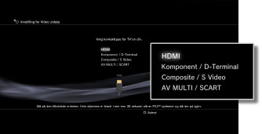
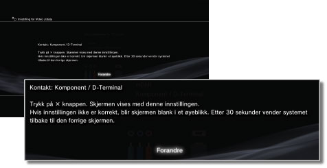
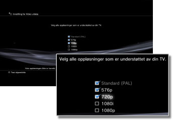
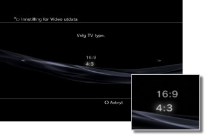
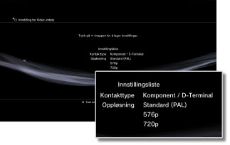

Innstilling for Video utdata
Juster systemets videoinnstillinger. Velg de beste innstillingene for TV-en i bruk.
1. |
Sjekk hvilken oppløsning TV-en har støtte for.
Oppløsningen (videomodus) varierer avhengig av TV-typen. Du finner mer informasjon i instruksjonene som fulgte med TV-en.
|
2. |
Velg  (Innstillinger) > (Innstillinger) >  (Skjerminnstilling). (Skjerminnstilling).
|
3. |
Velg [Innstilling for Video utdata].
|
4. |
Velg inngangstypen på TV-en.
Oppløsning (videomodus) varierer avhengig av inngangstypen som brukes.

| *1 |
Alternativene for videomodus varierer avhengig av regionen der PS3™-systemet ble kjøpt. I Nord-Amerika, Asia og andre NTSC-regioner vises 480i-videomodus som [Standard (NTSC)]. I Europa og andre PAL-regioner vises 576i-videomodus som [Standard (PAL)]. Du finner mer informasjon i instruksjonene som fulgte med produktet.
|
| *2 |
D-terminal er en kontakttype som hovedsakelig brukes i Japan. Oppløsningen som støttes av D1 til D5 er som følger:
D5: 1080p / 720p / 1080i / 480p / 480i
D4: 1080i / 720p / 480p / 480i
D3: 1080i / 480p / 480i
D2: 480p / 480i
D1: 480i
|
| *3 |
S VIDEO er et format som vanligvis brukes i Japan.
|
| *4 |
Euro-AV-kontaktpluggen er bare inkludert med PS3™-system som selges i Europa.
|
| *5 |
AV MULTI er et format som hovedsakelig brukes i Japan. Hvis [AV MULTI / SCART] velges, vises skjermen der du kan velge type for utgangssignalet.
|
| *6 |
SCART er et format som hovedsakelig brukes i Europa. Hvis [AV MULTI / SCART] velges, vises skjermen der du kan velge type for utgangssignalet.
|
|
5. |
Still inn 3D TV-skjermstørrelsen.
Still inn systemet slik at det samsvarer med størrelsen på skjermen til TV-en som du bruker.
Hvis TV-en du bruker ikke er en 3D TV, eller hvis du ikke valgte [HDMI] i trinn 4, vises ikke denne skjermen.
|
6. |
Endre innstillinger for videoutgang.
Endre oppløsningen for videoutgangen. Det kan hende at denne skjermen ikke vises, avhengig av kontakttypen som velges i trinn 4.

|
7. |
Still inn oppløsningen.
Velg alle oppløsninger som støttes av TV-en som brukes. Video overføres automatisk med en høyest mulig oppløsning for innholdet du spiller av fra, blant de valgte oppløsningene.*
* Videooppløsningen velges i følgende prioriteringsrekkefølge: 1080p > 1080i > 720p > 480p/576p > Standard (NTSC:480i/PAL:576i).
Hvis du velger [Composite / S Video] i trinn 4, vil ikke skjermen for valg av oppløsning vises.
Hvis [HDMI] velges, kan du også velge automatisk justering av oppløsningen ( HDMI-enheten må slås på ). I så fall vises ikke skjermbildet for valg av oppløsning.

|
8. |
Still inn TV-typen.
Velg TV-typen som brukes. Still inn bare når SD-oppløsning (NTSC:480p / 480i, PAL: 576p / 576i) skal være utgang, slik som når [Composite / S Video] eller [AV MULTI / SCART] velges i trinn 4.

|
9. |
Kontroller innstillingene.
Bekreft at bildet som vises, har den riktige oppløsningen for TV-en. Du kan gå tilbake til forrige skjermbilde og revidere innstillingene ved å trykke på  -knappen. -knappen.

|
10. |
Lagre innstillingene.
Innstillingene for videoutgangen lagres på PS3™-systemet. Du kan fortsette å stille inn audio utdatainnstillinger. For detaljer om lydutgang, se (Innstillinger) >  (Lydinnstilling) > [Audio Output Settings] i denne veiledningen. (Lydinnstilling) > [Audio Output Settings] i denne veiledningen.
|
Tips
- Hvis innstillingene for videoutgangen ikke stemmer overens med innstillingene som kreves for TV-en, kan skjermen bli blank når oppløsningen endres. Skjermen skal imidlertid gå tilbake til den opprinnelige oppløsningen automatisk etter en stund. Hvis skjermen forblir blank i mer enn 30 sekunder, må du slå av systemet. Hold deretter inne power knappen foran på systemet i minst fem sekunder for å slå systemet på igjen. Innstillingene for videoutgangen tilbakestilles automatisk til standardoppløsningen.
- Hvis en enhet som ikke er kompatibel med HDCP (High-bandwidth Digital Content Protection)-standarden, kobles til systemet med en HDMI-kabel, kan ikke video og/eller audio overføres fra systemet.
- Opphavsrettsbeskyttet innhold på en Blu-ray Disc kan bare overføres på 1080p ved hjelp av en HDMI-kabel som er koblet til en enhet som er kompatibel med HDCP-standarden.
- Når PS3™-systemet (CECH-3000-/4000-serien) kobles til en TV med en D-terminalkabel, en komponent AV-kabel eller en multi AV-kabel (et Sony Corporation-produkt), begrenses analog HD-uttak for å overholde kopibeskyttelsesteknologien som brukes av Blu-ray™ (AACS (Advanced Access Content System)). BD-videoprogramvare (BD-ROM) og BD-er spilt inn med kopibeskyttet videoinnhold (som sendte programmer) mates ut i 480i.
- Koble systemet (CECH-4200-serien eller senere) til med en HDMI-kabel for å mate ut BD-videoprogramvare (BD-ROM) og BD-plater spilt inn med kopibeskyttet videoinnhold.